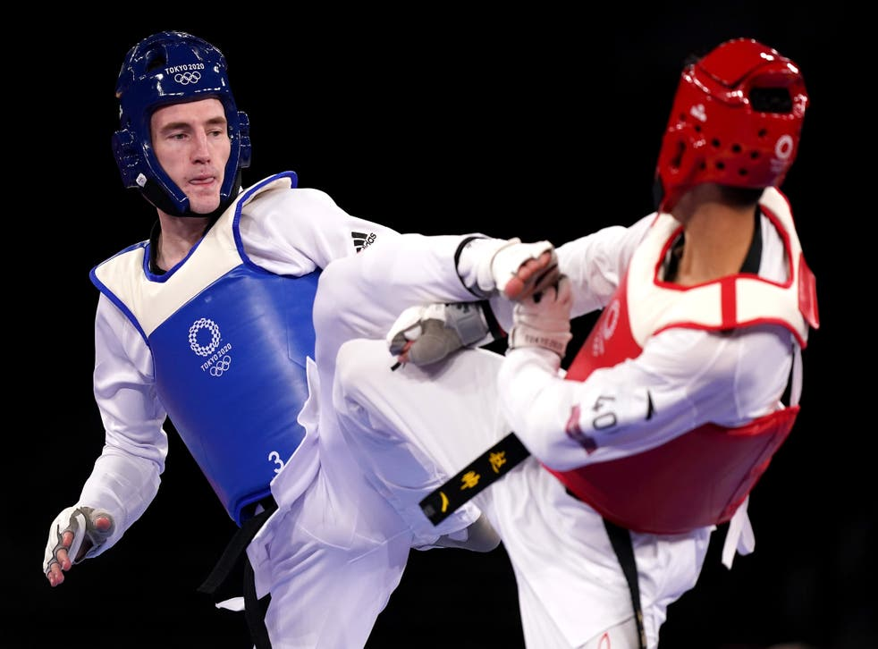
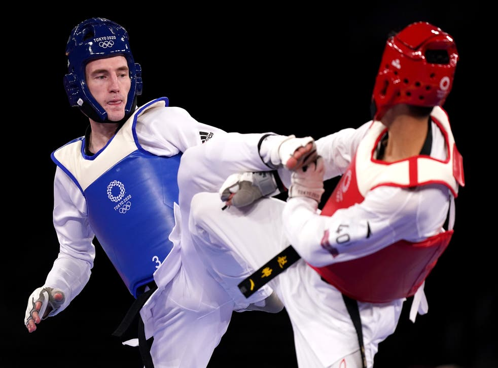
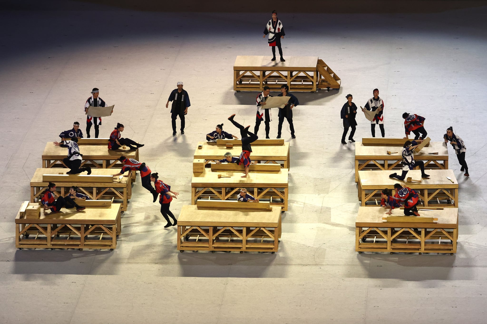
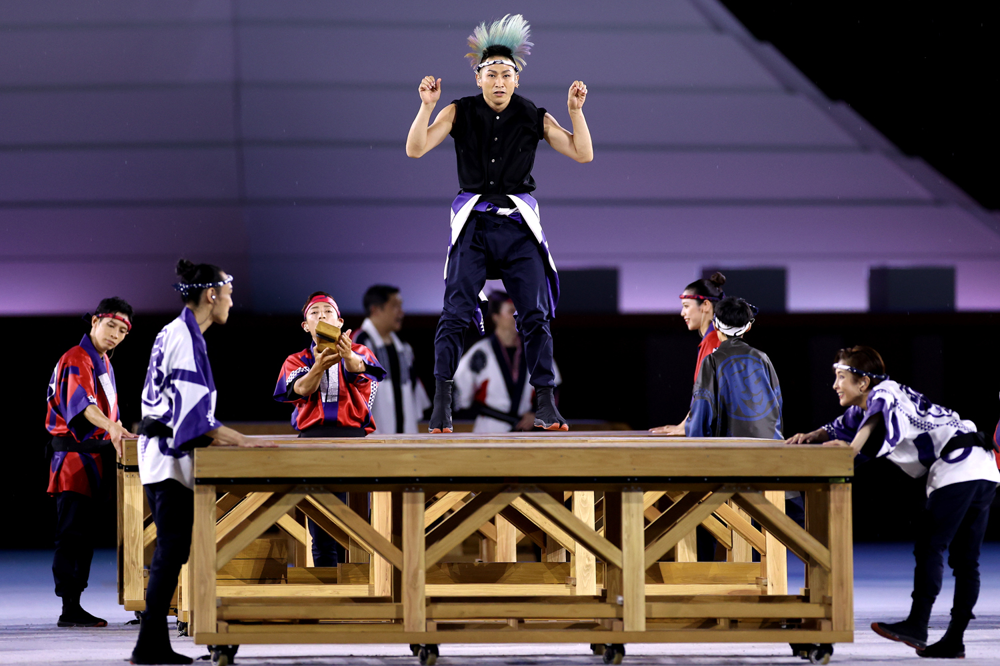
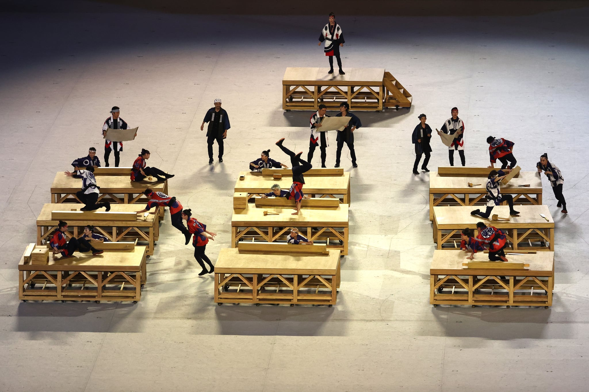
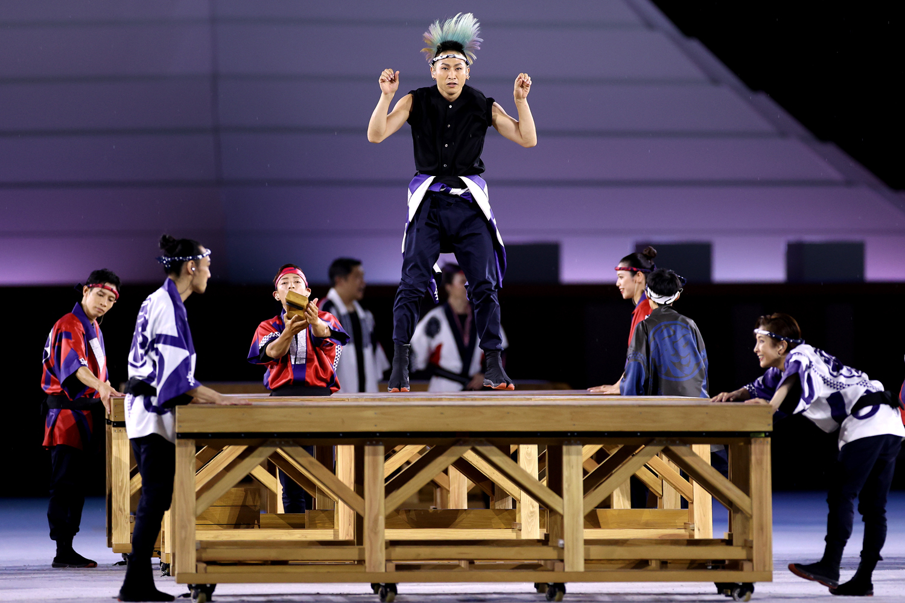
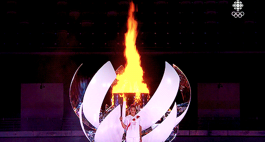
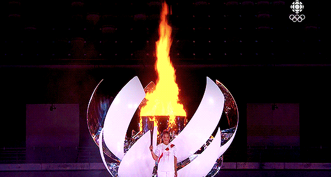

A Timeline of Major Olympics Events and the Results

The Olympics finished with in Tokyo after 2 weeks of events, the final results above, China was in 1st place until the last day when team USA took 1st place. The ceremony took place with social distancing measures closing speeches, the parade of athletes and finaly the handover of the olympic flag.
Day 16
Lauren Price from Wales won her bout for boxing against Qian Li from China winning another gold for team GB
Day 16
Joseph Choong came won gold in the modern Pentathalon, a event that has been in the olympics since 1912, it is a event that involves fencing, swimming, riding, shooting and running. Beating Egypt and South Korea.
Day 15
Josh Kerr came 3rd in the 1500m for Team GB behind Norway and Kenya.
Day 15
Tom Daley came third in the mens 10m Platform Diving winning his second medal of Tokyo 2020 after his gold medal in the Men's Synchronized 10m Platform. He was beat by Chinese divers who won both 1st and 2nd place
Day 15
GB won bronze in the womens race behind Jamica and the US in the 4x100m relays while in the mens race team GB own silver behind Italy although at the time of writing one of the men on the GB team has tested positive for a banned substance which could result in the loss of this medal.
Day 14
Karsten Warholm from Norway won gold for Norway while also breaking a world record with a time of 45.94 beating his previous world record time of 46.70
Day 12
Keely Hodgekinson recieved a silver medal for a time of 1:55:88 losing to Athing Mu from the US who beat her by 0.67 seconds.
Day 11
Team GB won with a gold medla with Australia and France coming 2nd and 3rd.
Day 10
Italy won gold in the 100m finals followed by the US, Canada and South Africa.It was won by former high-jumper Lamont Jacobs who completed the race with a time of 9.8 seconds.
Day 9
Taiwan (Chinese Taipei) beat China who were the previous champions from Rio 2016
Day 8
Team GB finished with Silver losing to the Chinese team by 0.28 seconds
Day 7
Team GB won another gold in swimming in the 4x200m relay beating Russia (ROC) by 3 seconds
Day 5
Tom Daley and Matty Lee won Gold in the mens synchronized 10m platform narrowly beating the previous world champions Aisen Chen and Yuan Cao by less than a point. It is Tom Daleys first gold despite having been in 4 olympics and has previosly come 8th,4th and 3rd in this competition in previous olympics
Day 3
A. Peaty wins gold in the 100m breaststroke for GB beating the netherlands swimmer A. Kamminga by 0.6 of a second with another GB swimmer coming in 5th in the same race
Day 3
 

Mens Taekwondo 68kg division ended with Argentina winning Gold and Team GB coming second with a loss of 34-29
Day 2
Britain has beat France going into the next round With Andy Murray and J. Salisbury 6,6 to 3,2.
Day 1
 



 

The Olympic Opening ceremony started at 12:00pm BST, Starting with Greece and finishing with the host country as is the tradition. The olympic flame was lit by Japanese tennis champion Naomi Osaka. It also included a performace of a Traditional Japanese Work Song.
Day 0